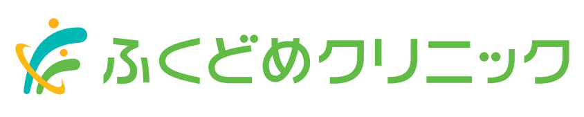

求人案内
ホーム > 求人案内
スタッフ募集
一緒に働いていただけるスタッフを若干名、募集しております。
まずはお気軽にお問い合わせください。
お問い合わせ
医療法人 慶仁会 ふくどめクリニック
TEL:0985-41-7700
「ホームページの求人募集を見て」とお伝えいただくとスムーズです。
医療法人 慶仁会
TEL:0985-41-7700
【休診日】日祝日・火・木・土曜午後

ホーム > 求人案内
一緒に働いていただけるスタッフを若干名、募集しております。
まずはお気軽にお問い合わせください。
医療法人 慶仁会 ふくどめクリニック
TEL:0985-41-7700
「ホームページの求人募集を見て」とお伝えいただくとスムーズです。